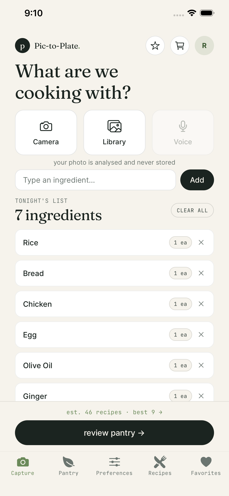
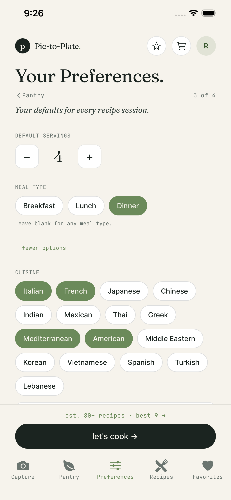
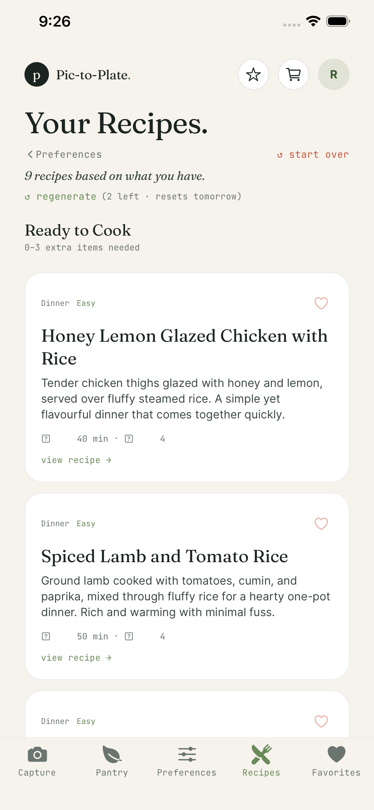
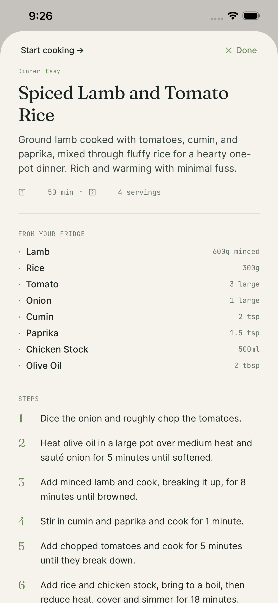

Solo, concept to the App Store, in two months.
Product, design, and full-stack engineering, one person, one thesis:
the friction in "what's for dinner" isn't ideas, it's not knowing
what you already have.
The bet
Most recipe apps assume you already have a shopping list. Pic-to-Plate
treats the pantry as a persistent model, not a one-off input, so it
gets more useful with every session instead of starting over each
time. Recipes surface across three effort tiers, Ready to Cook,
Almost There, Go Shopping, instead of a single yes/no match, so a
user who'd otherwise abandon at "you need 8 more ingredients" sees
three things they can cook tonight.
Scope decisions for v1
| No image storage |
Photos are processed and discarded, not kept, avoiding storage and privacy overhead before the model was validated. |
| No OAuth |
Email/password covers a soft launch; OAuth's redirect handling wasn't worth the surface area yet. |
| 2 regenerations/day |
Keeps API cost predictable during validation without blocking the core value. |
| Desktop-first web |
Mobile responsive deferred so early web time went into the product experience, not breakpoints. |
| Feedback widget, soft-launch only |
Good signal during validation, marked for removal at public launch, no permanent debt. |
One decision, in detail
Recipe generation takes 20-30 seconds. If nothing about your
ingredients or preferences has changed since the last run,
regenerating is wasted latency. Ingredients and preferences are
hashed into a fingerprint; a matching fingerprint returns the
cached result instantly. It's a small decision, but it's the
difference between the app feeling instant on a second look and
feeling slow every time.
Stack
Claude (vision + text) · FastAPI · Supabase (Postgres, Auth) ·
React + TypeScript (web) · Expo / React Native (iOS) · shared API
package across both platforms
Screens



